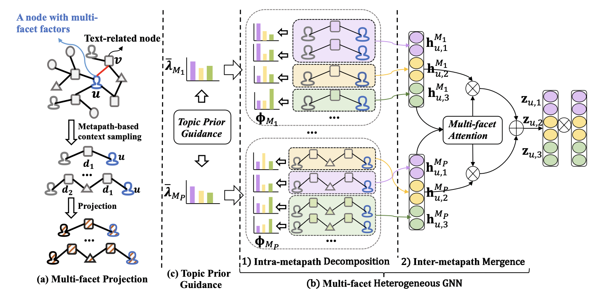
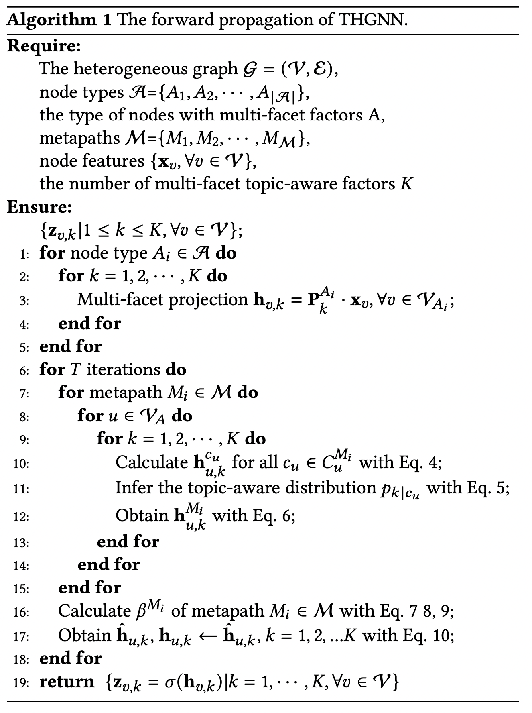
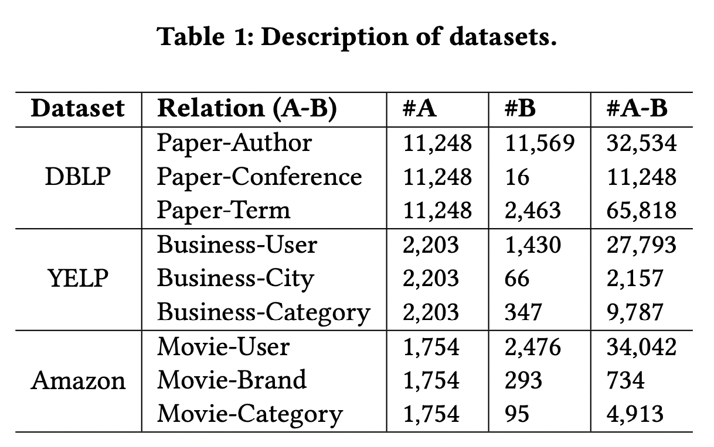
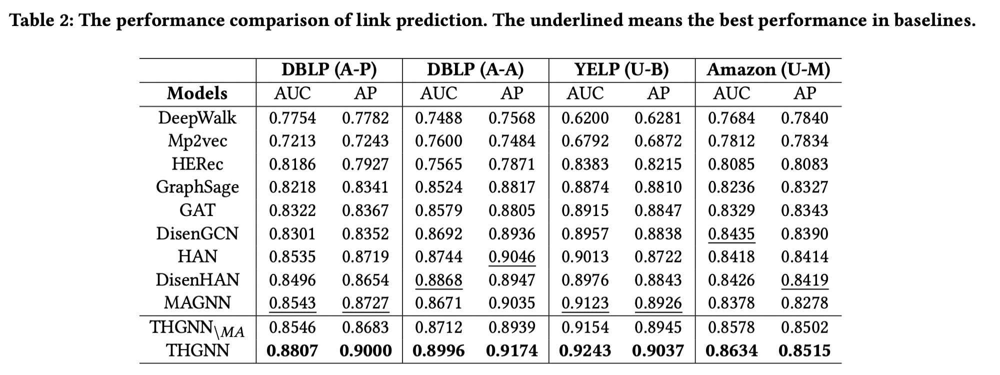
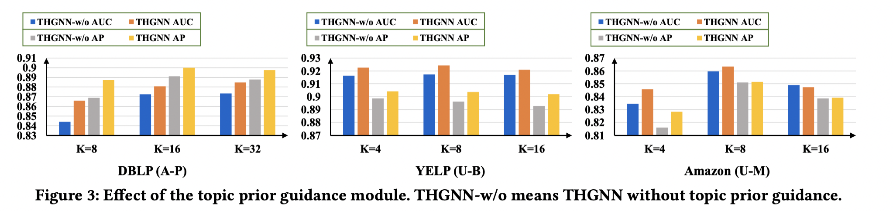

ABSTRACT
尽管异质图神经网络（heterogeneous graph neural networks
HGNN）有能力捕获揭示节点不同方面的丰富语义，但只是利用结构特征仍保持在粗粒度水平。事实上，节点丰富的非结构化文本内容也带有多方面主题感知因素产生的潜在但更细粒度的语义，这从根本上体现了为什么不同类型的节点会连接并形成特定的异构结构。然而，很少人尝试将它们分解。
作者提出了 Topic-aware Heterogeneous Graph Neural Network, named
THGNN,
分层挖掘主题感知语义，以学习多方面节点表示用户异质图的连接预测。具体来说，模型主要应用交替的两步聚合机制，包括元路径内分解和元路径间合并，这可以根据推理的主题感知因素独特地聚合丰富的异构信息，并保留分层语义。此外，还设计了一个主题先验指导模块，以依靠HG中非结构化文本的全局知识来保持多方面主题感知嵌入的质量。有助于提高性能和可解释性
## INTRODUCTION
HGNN的一条主要路线是定义并利用元路径，因为不同的元路径能从全局角度揭示目标节点的不同方面。如图一，Author-Paper-Author
(APA) and Author-Paper-Conference-Paper-Author
(APCPA)是描述了作者之间两种不同的关系的元路径。 The APA metapath
关联了两位共同作者, 而 APCPA metapath
关联两位在同一会议上发表论文的作者。

此外，文本内容通常是由多方面主题感知因素产生的语义的混合物，这从根本上体现了为什么不同类型的节点会连接并形成特定的异构结构。在链路预测中，这种主题感知语义比结构语义更细粒度。如图
1（c）中a1与a3，a5一起发布了不同领域的论文，如果我们不通过识别潜在的多方面主题感知因素来考虑这种细粒度语义，并简单地融合派生的混淆特征，它将不可避免地限制节点表示用于链路预测的性能。
虽然HGNNs采用了解偶表示学习，但它只关注粗粒度和局部级别，旨在自动分解结构语义，避免仅从邻居节点选择变态，但无法进一步识别和揭示裸节点连接背后的更细粒度语义。
鉴于当前方法的上述限制，在本文中，作者利用 HG
中的异构结构和非结构化文本内容。作者更深入地研究了基于 HG
中丰富的结构语义来识别潜在但基本的主题感知因素，以便学习节点的多方面主题感知表示，同时保留这种用于链接预测的分层语义。然而，它带来了一些挑战，因此不能直接扩展现有的解决方案。首先，HG
通常包含节点之间复杂的交互和多样化的属性信息，但没有明确的标签指示潜在的和微妙的主题感知因素。这给区分混合信息和将特征向量分解为多方面主题感知组件带来了困难。其次，在识别出潜在的主题感知因素之后，需要一种适当的机制来结合结构语义和主题感知语义。第三，为了跟上全局级别的结构语义，保留主题感知语义的全局特征并保持多方面主题感知嵌入的质量也很重要，从而同时提高性能和可解释性.
为了应对上述挑战，作者引入了一种新的链接预测模型，即主题感知异构图神经网络（Topic-aware
Heterogeneous Graph Neural Network
THGNN），旨在进一步挖掘基于多方面主题感知表示学习的结构语义的细粒度主题感知语义。更准确地说，THGNN
应用多面变换矩阵将不同类型节点的特征投影到多个主题感知子空间中。对于前两个挑战，THGNN
应用交替的两步聚合机制，包括元路径内分解和元路径间合并，以便为每个目标节点学习多方面主题感知嵌入。具体来说，元路径内分解步骤的主要目标是推断基于元路径的上下文的主题感知分布，并根据分布聚合上下文信息以形成多方面表示，从而捕获细粒度的主题感知语义。另一方面，元路径间合并步骤采用多方面注意机制来融合不同的元路径以进行最终的多方面嵌入，从而为链接预测保留结构和主题感知语义。对于最后一个挑战，我们引入了另一个名为主题先验指导的模块，它利用主题建模从非结构化文本内容中获取全局统计知识，并帮助指导上下文聚合。通过这种方式，它作为一个正则化器来鼓励推理主题感知子空间更加正交，并提高学习的多方面主题感知表示的可解释性。
DEFINITIONS
Heterogeneous Graph:
异构图定义为具有对象类型映射函数\(\varphi:\mathcal{V}\rightarrow\mathcal{A}\)和链路类型映射函数\(\psi:\mathcal{E}\rightarrow\mathcal{R}\)的图\(\mathcal{G = (V, E)}\)。\(\mathcal{A}\)和\(\mathcal{R}\)表示预定义对象类型和链接类型的集合，其中\(\mathcal{|A| + |R| > 2}\)。
Metapath: 元路径是表示为\(A_{1} \stackrel{R_{1}}{\longrightarrow} A_{2}
\stackrel{R_{2}}{\longrightarrow} \ldots
\stackrel{R_{l}}{\longrightarrow} A_{l+1}\)
的路径格式。它定义了对象\(A_1,A_{l+1}\)之间的复合关系 $ R=R_1 R_2 R_l
$ 。其中\(\circ\)表示关系上的组合运算符。
Metapath Instance:给定异构图的元路径\(M\)，\(M\)的元路径实例\(m\)被定义为图中与\(M\)中的类型序列匹配的节点序列。连接节点\(u\)和\(v\)的元路径实例，其中节点\(u\)是目标节点，表示为\(m_u\)。
Metapath-based Context:给定一个元路径实例\(m_u\)，目标节点\(u\)基于元路径的上下文\(c\)定义为实例中不包含节点\(u\)的其它节点序列，表示为\(c_u
=m_u\setminus\{u\}\)，其中存在节点包含文本内容。更具体地说，具有目标节点\(u\)的基于元路径 \(M\) 的上下文集合表示为 \(C_u^M\)。\(c\)中与文本相关的节点序列表示为\(𝑐_u^{text}\)
METHODOLOGY

Multi-facet Projection
由于HG中节点的异质性，不同类型的节点和边具有不同的属性，这些属性通常位于完全不同的特征空间中。为了在HG中挖掘潜在的主题感知子空间，我们需要将不同类型的节点特征投影到指示多方面主题感知语义的相同共享潜在向量子空间中。
假设HG中存在K个潜在的主题感知子空间，对于每种类型的节点，我们通过在使用节点向量之前通过K类型特定的线性变换将特征向量投影到K潜在主题感知子空间。如图2（a）所示，对于类型为\(\varphi(u)\in A\)的节点\(u\in V\)，多方面投影过程可以显示如下：
\[\mathbf{h}_{u,k}=\mathbf{P}_k^{\varphi(u)}\cdot\mathbf
x_u\tag{1}\] 其中\(k=1,2,\cdots,K\)。\(\mathcal x_u\in\mathbb
R^{d_{\varphi(u)}}\)为节点u的初始特征向量，\(\mathbf{h}_{u,k}\in \mathbb
R^{\frac{D}{K}}\)是在第k个特征感知子空间上的投影特征。\(\mathbf{P}_k^{\varphi(u)}\in \mathbb
R^{\frac{D}{K}\times d_{\varphi(u)}}\)是对于类型为\(\varphi(u)\)节点的第k个训练权重矩阵。
Sampling Strategy:给定 HG
中具有多方面因素的节点𝑢，首先需要通过不同的元路径对一些基于元路径的上下文进行采样。
为了识别多方面的主题感知因素，我们采用抽样策略来更多地关注那些包含多个具有高主题一致性的文本相关节点的基于元路径的上下文。采样过程定义如下：
\[p_{c_{u}}=\frac{\sum_{v_{s}, v_{s+1} \in
c_{u}^{t e x t}} \cos \left(\lambda_{v_{s}}^{c_{u}},
\lambda_{v_{s+1}}^{c_{u}}\right)}{\sum_{c_{u}^{\prime} \in
C_{u}^{M}}^{M} \sum_{v_{s}, v_{s+1} \in c_{u}^{\prime t e x t}} \cos
\left(\lambda_{v_{s}}^{c_{u}^{\prime}},
\lambda_{v_{s+1}}^{c_{u}^{\prime}}\right)}\tag{2}\] 其中\(𝑝_{𝑐𝑢}\)是基于元路径M的上下文\(c_u\)的采样概率，\(\lambda_{v_s}^{c_u}\)
是预先计算的文本内容的主题分布,由节点 \(v_s\) 在上下文 \(c_u\) 中通过主题模型 LDA 产生。
Multi-facet Heterogeneous Graph Neural Network
在接下来的讨论中，我们将放大 THGNN
的关键构建块，它由两个步骤组成：元路径内分解以捕获主题感知语义和元路径间合并以保留结构语义。
元路径内分解步骤的目的是初步推断基于元路径 \(M\) 的上下文\(C_u^M\)
中的主题感知分布，并基于推断的分布聚合上下文信息以形成多方面表示。
元路径间合并步骤旨在融合不同的元路径以生成最终的多方面嵌入，在当前迭代中保留结构和主题感知语义。
上述两步交替进行，总结如下： \[\mathbf{y}_{u}=g\left(\left\{\mathbf{h}_{u, k}
\mid 1 \leq k \leq K\right\},\left\{\mathbf{h}_{u, k}^{c_{u}} \mid 1
\leq k \leq K, c_{u} \in C_{u}^{M_{i}}, M_{i} \in
\mathcal{M}\right\}\right)\tag{3}\] 其中 \(𝑔(\cdot)\) 是学习 \(u\) 的最终多方面主题感知表示 \(\mathbf y_u\) 的聚合函数，\(\mathbf{h}_{u, k}^{c_{u}}\)
表示基于元路径上下文 \(c_u\)
在第k个主题子空间的嵌入表示。\(\mathcal
M\)是选择的元路径集合。假设存在𝐾个潜在主题感知子空间，我们想让
\(\mathbf y_u=[\mathbf z_{u,1},\mathbf
z_{u,2},\cdots,\mathbf z_{u,K}]\)由𝐾个主题感知组件组成,其中 \(\mathbf z_{u,k}\in \mathbb
R^{\frac{D}{K}}\)能够表示 \(u\)
的第k个主题感知因子。
Intra-metapath Decomposition
给定一个元路径 \(M_i\in \mathcal
M\)这一步的目标是推断每个采样的基于元路径的上下文属于哪个主题。
回想一下，我们期望 \(h_{u,k}^{c_u}\)通过利用当前基于元路径的上下文来捕获目标
\(u\) 的第k个方面的主题感知。
上下文编码可以通过以下方式： \[\mathbf{h}_{u,
k}^{c_{u}}=f\left(\left\{\mathbf{h}_{v, k}, \forall v \in
c_{u}\right\}\right)\tag{4}\] 其中 \(c_u\in
C_u^{M_i}\)。考虑到简单性和效率，\(f\)函数采用均值池化。
在将基于元路径的上下文编码为主题感知子空间中的多面表示之后，我们采用目标节点的多面表示与其当前基于元路径的上下文之间的余弦相似度来推断最相关的他们俩共享的主题感知子空间。
推断的主题分布由下式给出： \[p_{k \mid
c_{u}}=\frac{\exp \left(\cos \left(\mathbf{h}_{u, k}, \mathbf{h}_{u,
k}^{c_{u}}\right)\right.}{\sum_{k^{\prime}=1}^{K} \exp \left(\cos
\left(\mathbf{h}_{u, k^{\prime}}, \mathbf{h}_{u,
k^{\prime}}^{c_{u}}\right)\right.}\tag{5}\] 如果目标节点 \(u\)
与第k个主题感知子空间中的当前基于元路径的上下文\(c_u\)相关，则概率\(p_{k \mid
c_{u}}\)应该很高。同时，它还用作当前基于元路径的上下文信息在将其传播到第
k 个主题感知子空间中的目标节点时的重要性权重。
因此，我们可以获得目标节点 \(u\)
特定元路径的多方面主题感知表示: \[
\mathbf{h}_{u, k}^{M_{i}}=L_{2} \operatorname{Norm}\left(\sum_{c \in
C_{u}^{M_{i}}} p_{k \mid c_{u}} \cdot \mathbf{h}_{u,
k}^{c_{u}}\right)\tag{6}
\]
Inter-metapath Mergence
由于 HG
中的每个节点都包含多种类型的结构语义信息，这些信息可以由元路径揭示，作者提出了一种多面注意力来学习不同元路径的重要性并将它们合并以生成目标节点
\(u\) 最终的多面主题感知表示。
为了学习给定元路径 \(M_i\)
的重要性，首先用权重矩阵 \(W\)
转换元路径特定的单面表示，然后在一个训练batch中，通过求转换后的元路径特定的单面表示的均值，总结在第k个主题感知子空间中元路径\(M_i\) \[\mathbf{s}_{k}^{M_{i}}=\frac{1}{|B|} \sum_{u \in
B} \tanh \left(\mathbf{W} \cdot \sigma\left(\mathbf{h}_{u,
k}^{M_{i}}\right)\right)\tag{7}
\] 其中\(k=1,2,\cdots,K. W\in \mathbb
R^{\frac{D}{K}\times\frac{D}{K}}\)是可学习参数。\(|B|\)是batch大小。
然后我们使用多方面注意向量\([\mathbb
q_1^T,\mathbb q_2^T,\cdots,\mathbb q_K^T]\)来衡量元路径\(M_i\)在每个主题感知子空间中的相对重要性。
由于不同的元路径在结构层面描述了 HG
背后的各种语义，因此不同元路径的整体重要性应该在所有主题感知子空间中共享，因此作者将多方面的相对重要性总结为元路径\(M_i\)的整体重要性 \[
e^{M_{i}}=\sum_{k=1}^{K} \mathbf{q}_{k}^{T} \cdot \mathbf{s}_{k}^{M_{i}}
\tag{8}\] \[
\beta^{M_{i}}=\frac{\exp \left(e^{M_{i}}\right)}{\sum_{M \in
\mathcal{M}} \exp \left(e^{M}\right)} \tag{9}
\]
通过融合所有特定元路径的多方面主题感知表示，得到当前迭代中最终的多方面主题感知表示：
\[\hat{\mathbf{h}}_{u, k}=\sum_{M_{i} \in
\mathcal{M}} \beta^{M_{i}} \cdot \mathbf{h}_{u,
k}^{M_{i}}\tag{10}\]
上述两个步骤作为迭代一起执行，当前输出\({h_{𝑢,𝑘},𝑘=1,2,···,𝐾}\)将依次作为下一个主题感知分布推理的指导，也可以被解释为对于目标节点
𝑢 的不同类型的基于元路径的上下文的更新的 𝐾 个主题感知集群中心， 在 𝑇
迭代之后，THGNN 通过激活函数输出等式（3）中\(\mathbf y_u\) 的 K 个最终增强的表示：\({\mathbf z_{u,k}=\sigma(\mathbf h_{u,k}^{(T)})}|
k=1,2,\cdots,K\) (对于文本相关的节点 \(v\),let \(\mathbf
z_{v,k}=\sigma(\mathbf h_{v,k})\)
不经过迭代）。所有采样的基于元路径的上下文的最终推理主题感知分布，表示为\({\Phi_u^{\mathbf M_i},\mathbf M_i\in \mathcal M
},\Phi_u^{\mathbf M_i}\in \mathbb R^{|C_i^{\mathbf M_i}|\times
K}\) 可以解释为基于元路径\(\mathbf
M_i\)的上下文的软集群分配矩阵，\(\Phi_u^{\mathbf
M_i}\)的每一行包含等式（5）最后一次迭代计算得到的K个元素。 ###
Topic Prior Guidance two points needing to
further
- 1）由于异质性在基于元路径的上下文中，不同的主题感知子空间之间可能仍然存在混淆，甚至导致极端崩溃的情况；
- 元路径内分解步骤本质上是作为一种局部聚类执行的，因此很难从我们假设的潜在主题感知子空间中捕获全局知识。
第一个建议推理主题感知子空间更加独立，并且每个子空间都保持方便的大小。另一种方法是全局先验知识对于保持主题感知子空间的全局性是必要的。为了满足这两个要求，作者引入了另一个名为主题先验指导的模块，以鼓励推理主题感知子空间更加正交并提高可解释性。
如图 2 (c)
所示，受图聚类的正交性损失项的启发，添加的模块将用作正则化器，巧妙地利用主题模型从非结构化文本内容中获取全局统计知识，以指导
HG 之间的上下文聚合，其形式如下： \[\mathcal{L}_{T}=\frac{1}{|\mathcal{M}|}
\sum_{M_{i} \in \mathcal{M}}\left\|\frac{\Phi_{M_{i}}^{T}
\Phi_{M_{i}}}{\left\|\Phi_{M_{i}}^{T}
\Phi_{M_{i}}\right\|_{F}}-\frac{\bar{\lambda}_{M_{i}}}{\left\|\bar{\lambda}_{M_{i}}\right\|_{F}}\right\|_{F}\tag{11}\]
\[
\bar{\lambda}_{M_{i}}=\frac{1}{\left|C^{M_{i}}\right|} \sum_{c \in
C^{M_{i}}} \lambda_{d_{1}}^{c}\tag{12}
\] 其中\(\lambda_{d_1}^{c}\)表示沿着单个基于元路径上下文的第一个文档节点通过LDA预先计算得到的主题分布。由于数据的稀疏性，作者将当前小批量中目标节点的所有采样的基于\(M_i\)元路径上下文以拼接，形成矩阵 \(\Phi_{M_i}\)，而不是单个目标节点，以节省计算量。
### Model Training
我们通过多方面主题感知子空间中的内积来估计训练对 \((u,v)\)
的相似度，然后将它们全部相加作为链接预测的最终匹配分数： \[s_{u v}=\sum_{k=1}^{K} \mathbf{z}_{u, k}^{T}
\cdot \mathbf{z}_{v, k}\tag{13}\]

- 训练对\((u,v)\)中只有一个具有多方面因素的节点：假设 \(u\) 是唯一具有多方面因素的节点，则: \[ \mathcal{L}_{G, \mathcal{B}} =-\sum_{(u, v) \in \mathcal{B}^{+}} \log \sigma\left(s_{u v}\right)-\sum_{\left(u, v^{\prime}\right) \in \mathcal{B}^{-}} \log \sigma\left(-s_{u v^{\prime}}\right) \tag{14}\]
- 训练对\((u,v)\)中两者都具是有多方面因素的节点： \[ \mathcal{L}_{G, \mathcal{B}} =-\sum_{(u, v) \in \mathcal{B}^{+}} \log \sigma\left(\frac{1}{K} s_{u v}\right)-\sum_{\left(u^{\prime}, v^{\prime}\right) \in \mathcal{B}^{-}} \log \sigma\left(-\frac{1}{K} s_{u^{\prime} v^{\prime}}\right)\tag{15} \] 结合图重建损失和正则化项的整体训练损失可以重写为： \[\mathcal{L}_{\mathcal{B}}=\mathcal{L}_{G, \mathcal{B}}+\gamma \mathcal{L}_{T} . \tag{16}\]
EXPERIMENTS
  